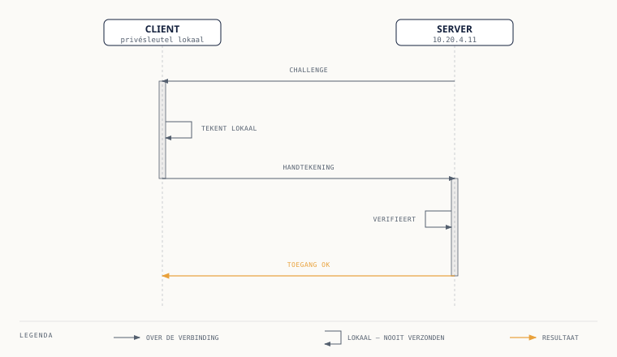

Cursus Linux Systeembeheer · Niveau 2 (Professional) · Deel 15 van 30
SSH Van wachtwoord naar sleutel, en verder.
Milan stapt op het Rapportagecluster over van wachtwoord- naar key-authenticatie: een sleutelpaar genereren met ssh-keygen, de publieke sleutel plaatsen met ssh-copy-id of handmatig, meerdere servers overzichtelijk beheren via ~/.ssh/config, de eerste serverside hardening in sshd_config, en met local port forwarding bij een dienst komen die alleen lokaal op een server luistert.
SSH (Secure Shell) is het protocol waarmee u versleuteld op afstand inlogt op een Linux-server en daar commando's uitvoert. Alles wat u tot nu toe op uw eigen Raspberry Pi of VM lokaal deed, doet u vanaf dit deel ook op afstand: op het Rapportagecluster bij Meridiaan Pensioen, het kleine cluster Ubuntu Server-machines waar Milan Struik sinds niveau 2 mee werkt.
Tot nu toe logde Milan in met een wachtwoord: ssh milan@10.20.4.11, gevolgd door een prompt. Dat werkt, maar heeft twee structurele zwaktes. Een wachtwoord is te raden of te brute-forcen, zeker als een server vanaf een groter netwerk bereikbaar is. En een wachtwoord kan worden onderschept of afgekeken op het moment dat het wordt ingetikt. Key-authenticatie lost beide op: er wordt nooit een geheim over de verbinding gestuurd, en de sleutel zelf is praktisch niet te raden.
Fenna Oudshoorn maakt hier op het Rapportagecluster geen uitzondering voor: "Wachtwoord-login op een server die vanaf ons kantoornetwerk bereikbaar is, is voor mij een openstaand incident, geen configuratiekeuze."
Dit deel behandelt hoe Milan van wachtwoord- naar key-authenticatie overstapt, en wat hij daarna met die verbinding kan doen.
02
Een sleutelpaar genereren
⏱ 12 min
SSH-key-authenticatie werkt met een sleutelpaar: een privésleutel, die nooit de eigen laptop verlaat, en een publieke sleutel, die op elke server komt te staan waarop wordt ingelogd. Genereren doet u met ssh-keygen:
ssh-keygen -t ed25519 -C "milan@meridiaan"
-t ed25519 kiest het sleuteltype, -C voegt een commentaar toe (meestal naam of gebruiker@organisatie) zodat een sleutel later herkenbaar is in een lijst met authorized_keys. Het commando vraagt om een opslaglocatie (standaard ~/.ssh/id_ed25519) en optioneel een passphrase — een extra wachtwoord dat de privésleutel zelf versleutelt op schijf.
Waarschuwing
Sla die passphrase niet over: zonder passphrase is een gestolen laptop ook een gestolen sleutel.
Ed25519 is tegenwoordig het standaard aan te raden sleuteltype. Het is een moderner elliptischecurve-algoritme dat kortere sleutels oplevert dan RSA bij een vergelijkbaar of hoger beveiligingsniveau, sneller rekent bij het ondertekenen en verifiëren, en van nature geen zwakke sleutellengtes toestaat (bij RSA moet u zelf bewust een lengte van minimaal 3072, bij voorkeur 4096 bit kiezen — een verouderd voorbeeld met 1024 bit is nog altijd te vinden in oude documentatie en is inmiddels onveilig). Voor de meeste moderne Linux-servers, inclusief elke Ubuntu Server-versie die in deze cursus wordt gebruikt, is ed25519 zonder voorbehoud de juiste keuze.
Er zijn nog systemen die ed25519 niet ondersteunen: sommige verouderde netwerkapparatuur of legacy-appliances met een oude OpenSSH-versie. Voor die uitzonderingsgevallen valt u terug op RSA:
-b 4096 zet de sleutellengte expliciet op 4096 bit — RSA zonder deze vlag valt terug op een kortere, minder wenselijke standaardlengte.
Hoe key-authenticatie vervolgens werkt zonder ooit een wachtwoord of de privésleutel zelf over de lijn te sturen: de server daagt de client uit met een willekeurig gegenereerd bericht (een challenge), de client ondertekent dat bericht met de privésleutel, en de server verifieert die ondertekening met de publieke sleutel die al op de server staat. Klopt de ondertekening, dan weet de server met zekerheid dat de client de bijbehorende privésleutel bezit — zonder dat die privésleutel ooit is verzonden.

Figuur 15-1 — de SSH-handshake bij key-authenticatie: challenge, ondertekening, verificatie, toegang
Controlevraag
Uit Werkboek deel 15, Uitwerking 15.1a
1Welk commando genereert een ed25519-sleutelpaar met een herkenbaar commentaarveld?Toon antwoord
ssh-keygen -t ed25519 -C "milan@meridiaan", gevolgd door een locatie (standaard is prima) en een passphrase.
03
De publieke sleutel op de server zetten
⏱ 10 min
De eenvoudigste manier om de publieke sleutel op een server te plaatsen is ssh-copy-id:
ssh-copy-id milan@10.20.4.11
Dit commando logt (nog met wachtwoord) in op de server, plaatst de inhoud van uw publieke sleutel in ~/.ssh/authorized_keys van die gebruiker, en zet meteen de juiste permissies op map en bestand.
Waar ssh-copy-id niet beschikbaar is, of waar u precies wilt zien wat er gebeurt, doet u het handmatig:
cat ~/.ssh/id_ed25519.pub
De uitvoer (één lange regel beginnend met ssh-ed25519) plakt u op de server aan het eind van ~/.ssh/authorized_keys van de doelgebruiker. Daarna de permissies:
chmod 700 ~/.ssh
chmod 600 ~/.ssh/authorized_keys
Harde eis, geen suggestie
SSH weigert een authorized_keys-bestand te gebruiken, en soms zelfs een hele .ssh-map, als die te ruim toegankelijk is voor anderen dan de eigenaar. Een map met groeps- of wereldschrijfrechten, of een authorized_keys die door de groep beschreven mag worden, wordt door de SSH-daemon stilzwijgend genegeerd — de meest voorkomende oorzaak van "mijn key werkt niet" bij wie dit voor het eerst handmatig doet.
Controlevraag
Uit Werkboek deel 15, Opdracht 15.2c / Uitwerking 15.2c
1U verandert tijdelijk de permissies van ~/.ssh op de server naar 755 en probeert opnieuw met key in te loggen. Wat gebeurt er?Toon antwoord
Met ~/.ssh op 755 (voor groep en anderen leesbaar en doorloopbaar) weigert SSH de sleutel te gebruiken en valt de verbinding terug op wachtwoord-authenticatie, of wordt geweigerd als die is uitgeschakeld — met een foutmelding of stille terugval, afhankelijk van de serverconfiguratie. Na chmod 700 ~/.ssh werkt key-login weer normaal.
04
Clientconfiguratie: ~/.ssh/config
⏱ 10 min
Zodra Milan meerdere machines op het Rapportagecluster beheert, wordt ssh -i ~/.ssh/id_ed25519 milan@10.20.4.11 -p 2222 voor elke server onhandig om te onthouden. ~/.ssh/config op de eigen laptop biedt Host-aliassen:
Host rapportagecluster1
HostName 10.20.4.11
User milan
Port 2222
IdentityFile ~/.ssh/id_ed25519
Host rapportagecluster2
HostName 10.20.4.12
User milan
Port 2222
IdentityFile ~/.ssh/id_ed25519
Met dit bestand op zijn plek volstaat:
ssh rapportagecluster1
HostName is het echte adres, User de inlognaam, Port de SSH-poort (van standaard 22 afwijkend is een bekende, lichte hardeningsmaatregel), IdentityFile de te gebruiken privésleutel. Dezelfde aliassen werken ook met scp en rsync, wat verderop in de cursus (bijvoorbeeld back-up en recovery) terugkomt.
Milan beheert in de praktijk drie machines op het Rapportagecluster:
Naam
Adres
Gebruiker
Poort
rapportagecluster1
10.20.4.11
milan
2222
rapportagecluster2
10.20.4.12
milan
2222
rapportagecluster-db
10.20.4.20
milan
22
Controlevraag
Uit Werkboek deel 15, Opdracht 15.3 / Uitwerking 15.3
1Schrijf het ~/.ssh/config-fragment voor de drie machines uit de tabel (allen met privésleutel ~/.ssh/id_ed25519), en geef het commando waarmee Milan daarna op rapportagecluster-db inlogt.Toon antwoord
Host rapportagecluster1
HostName 10.20.4.11
User milan
Port 2222
IdentityFile ~/.ssh/id_ed25519
Host rapportagecluster2
HostName 10.20.4.12
User milan
Port 2222
IdentityFile ~/.ssh/id_ed25519
Host rapportagecluster-db
HostName 10.20.4.20
User milan
Port 22
IdentityFile ~/.ssh/id_ed25519
Inloggen: ssh rapportagecluster-db
05
Serverside hardening — kort geïntroduceerd
⏱ 8 min
Zodra key-authenticatie werkt, is de logische vervolgstap wachtwoord-login op de server zelf uitschakelen. Dit gebeurt in /etc/ssh/sshd_config:
PasswordAuthentication no
PermitRootLogin no
PasswordAuthentication no staat alleen nog key-authenticatie toe. PermitRootLogin no verbiedt direct inloggen als root — beheerders loggen in als eigen gebruiker en gebruiken sudo, precies zoals in deel 11 behandeld. Na een wijziging herlaadt u de daemon:
sudo systemctl restart ssh
Fenna's vaste regel
Nooit de sessie sluiten voordat een tweede, nieuwe verbinding is getest. Een fout in sshd_config die de daemon niet meer laat starten, of die per ongeluk de eigen toegang blokkeert, is op een server zonder fysieke of out-of-band toegang lastig te herstellen.
Dit onderwerp — samen met fail2ban en verdere hardening — komt in deel 25 uitgebreid terug; hier is het doel alleen te weten dat deze opties bestaan en waarvoor ze dienen.
Controlevraag
Uit Werkboek deel 15, Opdracht 15.5 / Uitwerking 15.5
1In welke volgorde voert u de stappen uit om op het Rapportagecluster over te gaan naar PasswordAuthentication no, waarom is die volgorde belangrijk, en welke voorzorgsmaatregel neemt u vlak voordat u sudo systemctl restart ssh uitvoert op een server waar u alleen via SSH bij kunt?Toon antwoord
Volgorde: (1) sleutelpaar genereren op de client, (2) publieke sleutel op de server plaatsen via ssh-copy-id of handmatig, (3) testen dat inloggen met de sleutel daadwerkelijk werkt — in een nieuwe, aparte sessie, met de oude sessie nog open — en pas daarna (4) PasswordAuthentication no instellen in sshd_config en de daemon herstarten. Deze volgorde is belangrijk omdat stap 4 wachtwoord-login onherroepelijk uitschakelt: als de sleutel in stap 2 niet goed staat en dat pas na stap 4 wordt ontdekt, is er geen wachtwoord meer als terugvaloptie. Voorzorgsmaatregel: een tweede, actieve SSH-sessie naar dezelfde server openhouden totdat de nieuwe configuratie in een derde, verse sessie is bevestigd te werken. Gaat het mis, dan is die tweede sessie de enige weg om de fout in sshd_config te herstellen zonder fysieke of out-of-band toegang tot de machine.
06
SSH-tunneling
⏱ 10 min
SSH kan meer dan een shell openen: het kan ook netwerkverkeer door de versleutelde verbinding heen tunnelen. Local port forwarding maakt een poort op de eigen laptop beschikbaar die feitelijk naar een dienst op (of achter) de server wijst:
ssh -L 3000:localhost:3000 rapportagecluster1
Grafana op het Rapportagecluster luistert bewust alleen op localhost van de clustermachine zelf — niet direct vanaf het kantoornetwerk bereikbaar, uit voorzorg. Met bovenstaand commando opent Milan op zijn eigen laptop localhost:3000 in de browser, en SSH stuurt dat verkeer via de versleutelde verbinding door naar poort 3000 op de server. Het eerste getal is de lokale poort op de laptop, het tweede deel (localhost:3000) is het adres zoals de server dat zelf ziet, wat niet per se hetzelfde hoeft te zijn als het adres van de sshserver.
Remote port forwarding is de tegenhanger, met -R in plaats van -L: een poort op de server wordt doorgestuurd naar een dienst op de eigen laptop (of een derde machine die vanaf de laptop bereikbaar is). Dit is minder vaak nodig in het dagelijks beheer van het Rapportagecluster, maar bijvoorbeeld bruikbaar om vanaf een server tijdelijk bij een dienst te komen die alleen lokaal op de laptop van een ontwikkelaar draait.
Toepassing: Grafana op poort 8080
Op rapportagecluster1 draait Grafana, alleen bereikbaar op localhost:3000 van die machine zelf. Milan wil het dashboard op zijn eigen laptop bekijken, op lokale poort 8080 (poort 3000 is daar al in gebruik). Met de Host-alias uit sectie 4: ssh -L 8080:localhost:3000 rapportagecluster1, en daarna localhost:8080 in de browser.
Controlevraag
Uit Werkboek deel 15, Opdracht 15.4c / Uitwerking 15.4c
1Leg in twee zinnen uit waarom Grafana via local port forwarding bereikbaar maken veiliger is dan Grafana rechtstreeks op alle netwerkinterfaces te laten luisteren.Toon antwoord
Grafana blijft dan alleen bereikbaar voor wie al een SSH-verbinding met geldige key-authenticatie naar de server heeft opgezet — er is geen extra, apart te beveiligen netwerkpoort die vanaf het kantoornetwerk (of breder) rechtstreeks aanvalbaar is. De toegang loopt via hetzelfde, al geharde SSH-kanaal in plaats van via een tweede blootgestelde dienst.